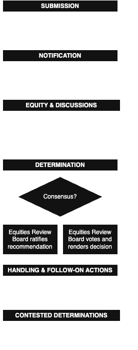

Being a CNA administrator means having access to something most people never see: zero-day vulnerabilities. That access comes with responsibility, but also perspective. It’s made me think about how other actors, especially governments, handle this kind of knowledge, and what it means when one side holds a stockpile of vulnerabilities capable of large-scale surveillance or disruption. The U.S. military even considered classifying zero-days as weapons subject to export controls.
I was encouraged to see that some governments have public procedures designed to manage this power transparently. But lately, it feels like that transparency is under pressure.
When the United Kingdom launched the HMS Dreadnought in 1906, it redefined naval warfare. The dreadnought was a warship so advanced, that it wasn’t just a display of power: it was a strategic signal that reshaped expectations. Germany responded by expanding its fleet, triggering a naval arms race rooted less in intent and more in perceived necessity.
The zero-day dreadnought

taken from trumpwhitehouse.archives.gov
Today, a similar pattern seems to be emerging in the digital realm. As the Trump administration returned in 2025, its cybersecurity strategy is shifting from structured deterrence to a more aggressive, offense-first approach, aligning with Trump’s Peace Through Strength doctrine. This posture builds on the foundation laid by National Security Presidential Memoranda 13 (NSPM-13) in 2018, which loosened interagency controls over offensive cyber operations.
One important, but seemingly overlooked, mechanism to the U.S. offensive cyberpower is the Vulnerabilities Equities Process (VEP), which is the Government Disclosure Decision Process (GDDP) used to decide whether to disclose or retain newly discovered zero-day vulnerabilities. While the VEP itself has not formally changed under Trump’s current or previous administrations, it involves significant discretion, particularly in assessing whether disclosure would harm national security. Within a policy environment that is increasingly shaped by offense, there is a growing risk that this discretion may increasingly tilt toward retention.
Though no explicit mandate has been issued, the combination of centralizing authority, reducing transparency, and dismantling oversight mechanisms sends a clear signal to other states: retention is not an exception, it may be becoming the norm. Like the dreadnought, this strategic posture may reset international expectations–not through declaration, but by example.
From deterrence to retention?
One of the effects of the NSPM-13 was that it streamlined the approval process for offensive cyber operations. This facilitated the Defend Forward doctrine, enabling U.S. Cyber Command to preemptively disrupt threats without explicit presidential approval. While proponents argue this enhances deterrence, research from the Atlantic Council suggests an overreliance on offensive cyber operations can increase global instability, as adversaries mirror these tactics and see this as provocation instead of deterrence.
The Biden administration adjusted this trajectory by introducing additional checks and transparency mechanisms. However, the first half of 2025 suggests that the second Trump administration may reverse this course. The weakening of oversight mechanisms, such as the Cyber Safety Review Board (CSRB), and the consolidation of decision-making authority within the executive branch indicate a growing emphasis on offensive capability.
This evolution doesn’t come with an explicit declaration that the U.S. is retaining more vulnerabilities. However, the surrounding policy signals–reduced transparency, diminished oversight, and intensified offensive posture–suggest a trend that warrants scrutiny.
Strategic signaling and the dreadnought effect
Just like the dreadnought reset the bar for naval power, a more opaque and offense-first U.S. cyber doctrine may risk shifting global norms. Vulnerability retention, which was once carefully weighed through the VEP, may increasingly be seen as the default by other nations watching U.S. behavior. This matters because it sends signals, not only to adversaries, but also to allies. Only a few other countries have a GDDP: the United Kingdom and the Netherlands have a defined GDDP, and Germany has explored a GDDP since 2018, but has not implemented a formal process to date. Because GDDPs are self-imposed constraints, most countries seem to have not prioritized their development or public debate. If the U.S. treats vulnerabilities as strategic assets rather than shared risks, other governments may feel compelled to follow its lead. Even those working to strengthen Coordinated Vulnerability Disclosure (CVD), such as the European Union through the Cyber Resilience Act and the NIS2 Directive, could face internal pressure to reassess their approach. In the end, a GDDP is a way for states to impose accountability on themselves. Without such a process, states may retain greater flexibility, but at the cost of reduced transparency.
The dreadnought effect refers to the unintended consequences of a dominant power’s strategic innovation resetting international norms. Named after HMS Dreadnought, a revolutionary British battleship launched in 1906, the term describes how a single state’s advancement can pressure others to escalate—even if they had no initial desire to do so. In cybersecurity, the metaphor applies to how shifts in U.S. offensive posture may lead other nations to change their own vulnerability disclosure strategies, simply to maintain parity.
The narrow corridor and the red queen effect
Acemoglu and Robinson’s Narrow Corridor frames healthy governance as a balance between state power and societal oversight. In this model, both must evolve jointly, providing equal pressure to one another. If one accelerates while the other stagnates, the system risks slipping into authoritarian overreach or institutional weakness.
A GDDP shaped by secrecy, unchecked executive power, and offensive priorities can threaten that balance. The VEP has already faced criticism for a perceived lack of transparency, as reflected in the ODNI’s first public disclosure report on retained and disclosed vulnerabilities. The criticism highlights the need for greater public insight into the VEP to determine whether it genuinely prioritizes defense over offense, something recent developments appear to contradict. The public is losing insight into how vulnerabilities are handled, while the private sector–which is often on the frontlines of cyberattacks–is left in the dark. This lack of transparency further erodes accountability, which again reinforces a shift towards cyber power centralization within the executive branch.
In the case of the United States, this trajectory is a textbook example of something larger. The Narrow Corridor describes the concept of a Despotic Leviathan(originating from Hobbes’ Leviathan), where unchecked state control weakens security and liberty. With the removal of oversight mechanisms and consolidation of cybersecurity authority, the Trump administration risks prioritizing short-term strategic advantages over long-term resilience, ultimately weakening U.S. cybersecurity. This concern is particularly important in light of the current congressional inaction and the removal of government officials involved in Trump’s criminal prosecution, further undermining institutional checks and balances.
This is where the Red Queen concept from the Narrow Corridor becomes relevant. To stay secure, both the state and society must run to remain in the “narrow corridor”. By actively sidelining society’s oversight role, the Trump administration disrupts this balance, undermining the reciprocal strengthening that supports resilient governance, robust cybersecurity, and civil liberty.
Consequences and global shifts
- Allies may feel compelled to retain: U.S. posture may inadvertently pressure other countries to deprioritize disclosure, even if it contradicts their public policy.
- Private sector is left exposed: Coordinating large-scale vulnerability disclosures has shown me just how far the ripples from a single flaw can reach. When retained vulnerabilities leak (or worse, when no one knows they exist), the fallout isn’t theoretical. A great example is EternalBlue: originally retained by the NSA, it was later leaked and exploited in the WannaCry and NotPetya attacks, which were two of the most disruptive cybersecurity incidents in recent history. These attacks weren’t launched by state actors, but by criminal and proxy groups.
- Norms begin to fracture: The idea of disclosure as responsible security weakens when strategic ambiguity dominates global cyber policy.
Conclusion: rediscovering the corridor
Zero-day vulnerabilities are not just technical artifacts, they are instruments of policy. While the U.S. has not explicitly stated it is retaining more vulnerabilities, its broader cyber strategy sends signals that may shift global expectations.
Like the dreadnought before World War I, offensive cyber capability can reset norms in dangerous ways. To remain in the Narrow Corridor, the U.S. should lead by example: strengthening oversight, maintaining transparency, and upholding vulnerability disclosure as a pillar of cyber resilience.
From where I stand, real strength doesn’t lie in how many vulnerabilities are kept, but in what is disclosed, when, and why. That’s the foundation of trust–and trust, not secrecy, is what makes the internet more secure.